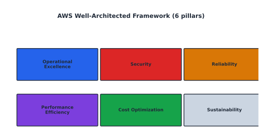

Cloud Architecture, Optimization, and the Well-Architected Framework#
Learning Objectives#
Apply core software architecture principles & quality attributes.
Understand the six AWS Well-Architected pillars.
Use the AWS Well-Architected Tool.
Drive improvement with AWS Cost Explorer.
Software Architecture Principles#
Architecture = the design decisions that balance quality goals against constraints.
Principle |
What |
|---|---|
Separation of concerns |
keep tiers/layers independent |
Single Responsibility |
one reason to change per component |
Scalability / elasticity |
design for growth (Ch 12) |
Resilience |
expect failure, degrade gracefully |
Security by design |
least privilege, encryption (Ch 11) |
Observability |
metrics/logs/traces by default (Ch 10) |
Operability |
easy to run: debug, roll back, tune |
Quality Attributes (NFRs)#
Attribute |
Goal |
Metric |
|---|---|---|
Availability |
stay up |
99.99% uptime |
Scalability |
grow capacity |
req/sec |
Fault-tolerance |
survive failures |
no SPOF |
Performance |
fast responses |
p99 latency |
Security |
protect data |
breaches = 0 |
Maintainability |
easy change |
deploy no-downtime |
Cost |
minimize spend |
\(/tx, \)/month |
Sustainability |
carbon efficiency |
kWh/request |
The Six AW**SSF Well-Architected Pillars#
{kind=link}

Fig. 21 The six Well-Architected pillars: Operational Excellence, Security, Reliability, Performance Efficiency, Cost Optimization, Sustainability.#
1. Operational Excellence#
Operate and monitor the system; run releases safely. Tools: CodePipeline, Systems Manager, CloudWatch.
2. Security (the admin’s daily focus)#
Protect data, systems, and assets. Tools: IAM (least privilege), KMS (encryption), GuardDuty, WAF, Security Hub.
3. Reliability#
Workload performs its function correctly and continuously. Tools: Multi-AZ, Route 53 failover, ALB health checks (Ch 12).
4. Performance Efficiency#
Use computing resources efficiently. Tools: rightsizing, CloudFront/ElastiCache caching, managed services (Ch 5/10).
5. Cost Optimization#
Avoid unnecessary spend; measure, optimize, attribute. Tools: Cost Explorer, Budgets, Spot, Savings Plans, Compute Optimizer (Ch 2).
6. Sustainability#
Minimize environmental impact.
Actions: right-size & pause, select efficient architectures (e.g., Graviton), reduce
data movement, pick renewable-energy Regions (Customer Carbon Footprint Tool).
Mapping Pillars to This Course#
Pillar |
Chapters |
Daily tool |
|---|---|---|
Operational Excellence |
10, 14 |
CloudWatch + SSM Automation |
Security |
3, 11 |
IAM + KMS + GuardDuty |
Reliability |
5, 9, 12 |
ALB + Multi-AZ + health checks |
Performance Efficiency |
5, 10 |
right-sizing + CloudFront + cache |
Cost Optimization |
2, 7, 12 |
Budgets + Spot + lifecycle |
Sustainability |
2, 5 |
smaller families, Graviton |
Review every workload against the framework in a Well-Architected Review.
AWS Well-Architected Tool#
Console tool to review workloads, answer per-pillar questions, and track risks/improvements.
Create a workload (AWS accounts + resources it touches).
Answer questions per lens (generic + serverless / HPC / ML).
Record risks (issue, impact, likelihood, likelihood of failure).
Share a review report; track improvement items as tickets.
AWS Cost Explorer#
Visual analytics for understanding & optimizing AWS cost.
Capability |
Use |
|---|---|
Monthly spend trend + forecast |
budget vs. actual |
Breakdowns (service / tag / region) |
find wasteful spend |
RI/Savings Plan recommendations |
buy committed capacity |
Anomaly detection |
alert on spikes |
High-leverage move: a disciplined tagging strategy (Environment, Team, Project).
Untagged resources become unattributable spend — “unknown unknowns.” Cost Explorer can only
classify what you tag.
Optimization checklist#
Terminate idle resources (underutilized EC2, unused EBS/volumes).
Right-size instance families (drop
c5.4xlarge→c5.2xlarge).Match purchase model to usage: Savings Plans for steady, Spot for batch.
Tier storage: S3 IA/Glacier/Intelligent-Tiering for cold data (Ch 7).
Use Compute Optimizer / Trusted Advisor findings as a starting list.
Checkpoint#
Q1. Which Well-Architected pillar overlaps most with a sysadmin’s daily job?
Answer. Security — IAM, patching, secrets, and hardening are daily concerns; closely second are Operational Excellence (runbooks) and Reliability (health checks).
Q2. What single habit gives the biggest cost-optimization leverage?
Answer. A disciplined tagging strategy so every dollar can be attributed to a team/project and rightsized; Cost Explorer can only optimize what it can see.
Q3. How does right-sizing serve both Cost Optimization and Sustainability?
Answer. Smaller instances use less compute → less $/hour and less electricity/KWh, so they reduce both cost and carbon with the same knob.
Q4. In the Well-Architected Tool, what artifact captures “this needs fixing”?
Answer. A risk (with issue, impact, likelihood, failure mode) which the team promotes to a tracked improvement item / Jira ticket.
Q5. Where in this book did you see SLO/SLI vs. SLA (Ch ___ and Ch ___)?
Answer. SLO/SLI were introduced in Chapter 10; AWS service SLAs (e.g., 99.95% ALB) are noted wherever a managed service is discussed, especially Ch 5/9.
Sources#
The concepts in this chapter are summarized from the following authoritative sources:
AWS Well-Architected Framework: https://docs.aws.amazon.com/wellarchitected/latest/framework/welcome.html
AWS Cost Explorer User Guide: https://docs.aws.amazon.com/cost-analyzer/latest/userguide/
AWS Sustainability: https://aws.amazon.com/sustainability/